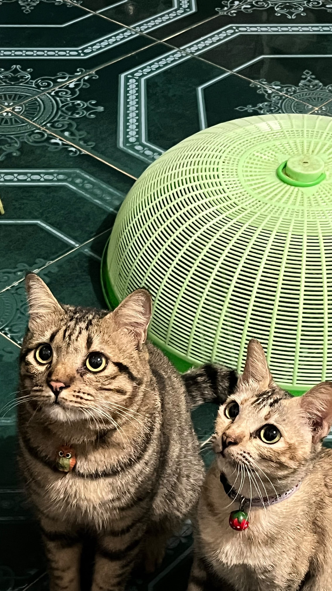

Web
Apotik Abc
Web apotek tempat pembeli memesan obat secara online, sementara admin mengelola data obat dan mengonfirmasi pesanan. Obat keras sengaja tidak bisa dipesan online.
PHP / MySQL / HTML dan CSS
Buka web Apotik AbcLoading...
Informatika Medis / Universitas Tamalatea Makassar
Saya belajar membuat alat dan aplikasi untuk urusan kesehatan, dari sensor IoT sampai peta data penyakit.
Saya kuliah di jurusan yang mempertemukan kesehatan dan teknologi. Di kelas saya belajar epidemiologi, di luar kelas saya merakit sensor, menulis kode, dan mengolah data.

Web
Web apotek tempat pembeli memesan obat secara online, sementara admin mengelola data obat dan mengonfirmasi pesanan. Obat keras sengaja tidak bisa dipesan online.
PHP / MySQL / HTML dan CSS
Buka web Apotik AbcIoT
Sensor ultrasonik mengukur jarak, servo menggerakkan tutup, dan layar LCD menampilkan hasil bacaan.Percobaan pertama memakai Arduino Uno dan ESP32 yang terhubung ke Blynk. Dan percobaan kedua memakai Orange Pi Zero 3 dengan Python.
Arduino / ESP32 / Orange Pi / Python
Data kesehatan
Peta prevalensi hipertensi per provinsi di Indonesia. Saya memakai simbologi bergradasi di QGIS supaya provinsi dengan angka tinggi langsung terlihat.
QGIS / data CSV
Mau ngobrol soal proyek, tugas kelompok, atau sekadar bersapa? Pilih jalur yang paling nyaman.